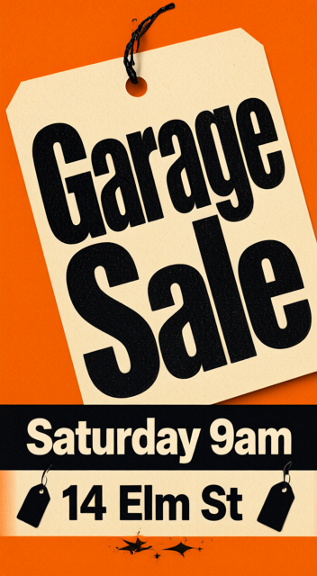
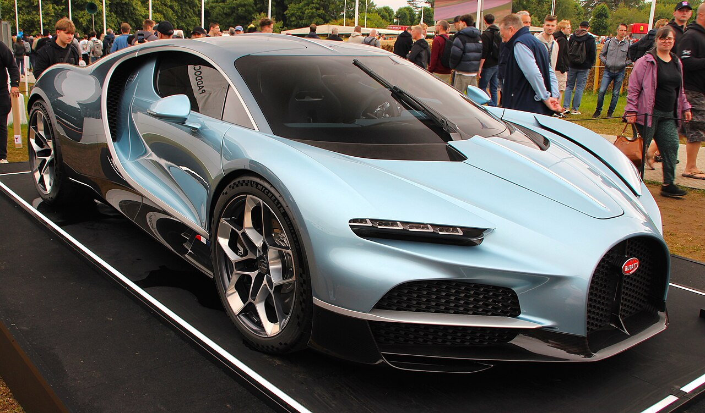
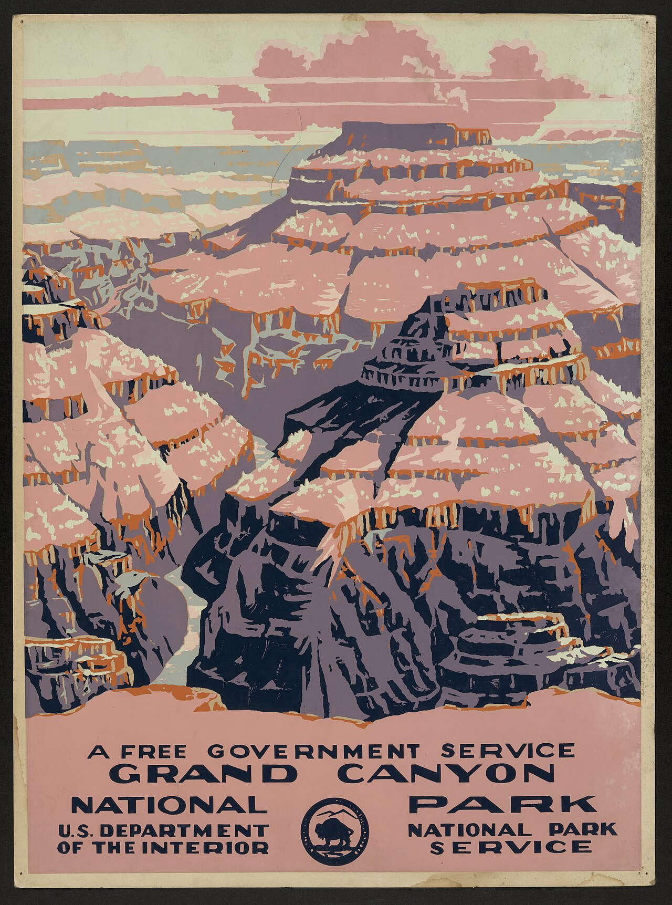

Got what they wanted16 vs 9of 20, ours vs MCP
Clear wins7 vs 013 comparable
Credits per case101 vs 104average
MCP could not do5of 20
6 vs 1 got what they wanted, of 65 vs 0 clear wins, 1 comparable16 vs 23 credits per case4 the MCP could not do
Trim, then add a caption with exact words
Trim this clip to the first 5 seconds and put the words 'Clean rooms. Clear minds.' at the bottom, exactly, readable throughout.
what they gave us
| ours | MCP |
| Deliver one edited video clip. | ✓ | ✓ |
| Trim the source clip to its first 5 seconds. | ✓ | |
| Display the exact tagline “Clean rooms. Clear minds.”, preserving capitalization and punctuation. | ✓ | |
| Place the tagline at the bottom of the video frame. | ✓ | |
| Keep the tagline readable throughout the entire output clip. | ✓ | |
| Preserve the source clip’s content apart from the requested trim and text overlay. | ✓ | ✓ |
Join two clips with a dissolve
Join these two clips in this order with a soft dissolve between them.
what they gave us
MCP could not0 cr
I can’t directly join clips with the connected Magic Hour tools—they don’t support timeline editing or dissolves.
In a video editor, place barber-seed.mp4 first, then v4-classroom-wipe.mp4, and add a 0.5-second cross-di
| ours | MCP |
| Deliver one combined video containing both supplied clips. | ✓ | |
| Place the first supplied clip before the second supplied clip. | ✓ | |
| Use a soft dissolve at the junction between the clips. | ✓ | |
| Preserve the supplied clips’ content apart from the overlap needed for the dissolve. | ✓ | |
Warmer, pixel-identical otherwise
Make this photo slightly warmer in tone; everything else must stay pixel-identical: same person, framing, background.
 what they gave us
what they gave us
MCP could not0 cr
To keep everything else pixel-identical, this needs a non-generative color adjustment. The connected Magic Hour editor regenerates pixels, so I can’t guarantee your exact-preservation requirement with it.
In a photo edi
| ours | MCP |
| Deliver one edited version of the supplied photo. | ✓ | |
| Make the photo slightly warmer in tone, with a subtle rather than dramatic change. | ✓ | |
| Keep the person unchanged, including their appearance, expression, and pose. | ✓ | |
| Keep the original framing unchanged, with no cropping, zooming, or repositioning. | ✓ | |
| Keep the background unchanged. | ✓ | |
| Preserve the original image dimensions and aspect ratio. | ✓ | |
| Apart from the requested warmth adjustment, keep everything else pixel-identical, with no additional edits. | ✓ | |
Resize to three sizes
Deliver this poster in three sizes: 1:1 for a feed post, 9:16 for a story, 16:9 for a banner. Each one must fill its frame: re-lay out the design so the artwork and every word fit the new shape naturally; keep the style, colours and all the lettering exactly; no stretching, and no letterboxing bars.
 what they gave us
what they gave us
MCP could not0 cr
The connected Magic Hour tools don’t support resize-and-pad without regeneration, so I can’t create those three files here while respecting your instructions. I won’t use an AI editor to redraw your poster.
This Pillow
| ours | MCP |
| Deliver three versions of the original poster. | ✓ | |
| Provide a 1:1 square version for a feed post. | ✓ | |
| Provide a 9:16 portrait version for a story. | ✓ | |
| Provide a 16:9 landscape version for a banner. | ✓ | |
| Preserve every word and all lettering exactly, without omissions or alterations. | | |
| Keep the original design’s style and colours unchanged. | | |
| Re-layout the artwork and text to fill each frame naturally, with no stretching, padding or letterboxing bars. | | |
| Each version looks intentionally designed, with readable text and no awkward clipping or overlaps. | | |
Underspecified poster: must ask for the words and the size before spending
A printed poster (portrait) and a Facebook post version for a garage sale; the words exactly: 'Garage Sale', 'Saturday 9am', '14 Elm St'.
Ours got it20 cr


| ours | MCP |
| There are two deliverables: a printed-poster version and a Facebook-post version. | ✓ | ✓ |
| The printed poster has a portrait layout. | ✓ | ✓ |
| The Facebook version is formatted for sharing in the neighbourhood Facebook group. | ✓ | ✓ |
| On each version, the only words on it are exactly those: 'Garage Sale', 'Saturday 9am', '14 Elm St'. | ✓ | ✓ |
| Both versions look deliberately designed, with clear visual hierarchy and readable event details. | ✓ | ✓ |
Edit existing clips together with music and a title
Edit these four clips into one video in this order: lions, penguins, giraffe, logo card; soft dissolves between them; light upbeat family music underneath; the title 'Ridgeview Zoo · This weekend' at the start.
what they gave us
MCP could not0 cr
I can help plan this, but the connected Magic Hour tools don’t support joining multiple clips, adding timeline dissolves, or mixing music beneath them. I can’t produce the finished edit here without recreating rather tha
| ours | MCP |
| The deliverable is one video combining all four supplied clips. | ✓ | |
| The clips appear in this order: lions, penguins, giraffe, logo card. | ✓ | |
| Soft dissolves connect the clips. | ✓ | |
| Light, upbeat, family-friendly music plays underneath the video. | ✓ | |
| An opening title appears at the start of the video. | ✓ | |
| For the opening title, the only words on it are exactly those: “Ridgeview Zoo · This weekend”. | ✓ | |
| The finished edit plays as a cohesive video, without unintended gaps or abrupt audio cuts. | ✓ | |
1 vs 0 got what they wanted, of 11 vs 0 clear wins, 0 comparable1090 vs 1080 credits per case
Three-clip zoo ad with a voice-over and a logo end card
A 45-second widescreen (16:9) YouTube ad for Ridgeview Zoo in three clips with a warm, friendly voice-over: lions at dawn, then penguins being fed, then giraffes at the treetops; end on a clean logo card that reads exactly 'Ridgeview Zoo' in green and gold with a simple antelope mark and the line 'Open daily 9–5 · Kids under 5 free'. The voice-over invites families to visit this weekend.
| ours | MCP |
| Deliver one finished zoo advertisement built from three animal clips. | ✓ | ✓ |
| The advertisement lasts 45 seconds. | ✓ | ✓ |
| The video uses a widescreen 16:9 format for YouTube. | ✓ | ✓ |
| The animal clips show, in order, lions at dawn, penguins being fed, and giraffes at the treetops. | ✓ | |
| A warm, friendly voice-over invites families to visit this weekend. | ✓ | |
| The advertisement ends on a clean green-and-gold logo card featuring a simple antelope mark. | ✓ | |
| The logo card displays 'Ridgeview Zoo' and the line 'Open daily 9–5 · Kids under 5 free'; the only words on it are exactly those. | ✓ | |
| The finished advertisement feels professionally edited, with coherent transitions and clearly audible narration. | ✓ | |
9 vs 8 got what they wanted, of 131 vs 0 clear wins, 12 comparable64 vs 66 credits per case1 the MCP could not do
Product shot from the user's photo
Put this perfume bottle (attached) on a white marble surface with soft studio light, a wide 16:9 banner for the website homepage; keep the bottle exactly as it is, no text.
 what they gave us
what they gave us | ours | MCP |
| Produce one product image featuring the attached perfume bottle. | ✓ | ✓ |
| Format the image as a wide 16:9 banner suitable for a website homepage. | ✓ | ✓ |
| Place the perfume bottle on a white marble surface. | ✓ | ✓ |
| Use soft studio lighting. | ✓ | ✓ |
| Keep the bottle exactly as supplied, including its shape, color, cap, label, and existing markings. | | |
| Add no text to the image. | ✓ | ✓ |
| Make the bottle look naturally integrated into a polished product photograph, with coherent lighting and contact shadows. | ✓ | ✓ |
Product shot from words only
A product shot of a matte black insulated water bottle on a pale concrete surface, soft studio light, premium minimal look, square 1:1 for the Instagram feed, no text.
| ours | MCP |
| The deliverable is one product-shot image of an insulated water bottle. | ✓ | ✓ |
| The bottle has a matte black finish. | ✓ | ✓ |
| The bottle is positioned on a pale concrete surface. | ✓ | ✓ |
| The scene uses soft studio lighting. | ✓ | ✓ |
| The image has a premium, minimal visual style. | ✓ | ✓ |
| The image is square, with a 1:1 aspect ratio suitable for the Instagram feed. | ✓ | ✓ |
| No text appears anywhere in the image. | ✓ | ✓ |
| The bottle is the clear visual focal point of a polished, professional product photograph. | ✓ | ✓ |
Poster with exact words
A poster for an open mic night, printed A4 (3:4), warm retro look; the words must read exactly: 'Open Mic Night', 'Friday 7pm', 'The Blue Door'.
| ours | MCP |
| The deliverable is one poster advertising an open mic night. | ✓ | ✓ |
| The poster is suitable for printing as A4 flyers. | | |
| The poster has a portrait 3:4 aspect ratio. | | |
| The visual style is warm and slightly retro. | ✓ | ✓ |
| The poster includes 'Open Mic Night', 'Friday 7pm', and 'The Blue Door'; the only words on it are exactly those. | ✓ | ✓ |
| The poster looks deliberately designed, with readable event information and a clear visual hierarchy. | ✓ | ✓ |
Sale post, then a change of direction
A bold red-and-white square image for the Instagram feed announcing a sale; the words must read exactly '20% OFF' and 'This weekend only'.
| ours | MCP |
| The deliverable is one sale-announcement image. | ✓ | ✓ |
| The image is square, suitable for an Instagram feed post. | ✓ | ✓ |
| The design uses a red-and-white color scheme. | ✓ | ✓ |
| The visual style is bold. | ✓ | ✓ |
| The only words on it are exactly those: '20% OFF' and 'This weekend only'. | ✓ | ✓ |
| The image looks intentionally designed, with clear, legible promotional text. | ✓ | ✓ |
Make it warmer
Make this photo warmer in tone (golden, like late afternoon light); change nothing else: same person, pose, framing and background.
 what they gave us
what they gave us | ours | MCP |
| Deliver one edited version of the original photo. | ✓ | ✓ |
| Give the photo a warmer, golden tone resembling late-afternoon light. | ✓ | ✓ |
| Keep the person’s identity and appearance unchanged. | ✓ | ✓ |
| Keep the person’s pose unchanged. | ✓ | ✓ |
| Keep the original framing unchanged. | ✓ | ✓ |
| Keep the background unchanged. | ✓ | ✓ |
| Preserve every other aspect of the photo exactly, apart from the requested tonal warming. | ✓ | |
| Keep the result looking like a natural photograph rather than an obvious color-filter effect. | | ✓ |
Remove the crowd
Remove all the people from the background of this photo and fill the background in naturally; the car and everything else stay exactly as they are.

what they gave us | ours | MCP |
| The deliverable is one edited version of the supplied photo. | ✓ | ✓ |
| All people in the background are removed. | ✓ | ✓ |
| The areas revealed by removing people are filled in naturally to match the surrounding background. | | |
| The car remains exactly unchanged. | | |
| Everything other than the people and the areas needed to fill their removal remains exactly unchanged. | | |
| The removal leaves no visible editing seams, ghosting, or remnants of people. | ✓ | ✓ |
Trim a clip
Trim this clip to the first 6 seconds (0 to 6).
what they gave us
MCP could not0 cr
I can’t perform a plain trim with the connected tools; they would regenerate or modify the clip.
To keep only 0:00–0:06, run this locally with FFmpeg:
bash
ffmpeg -i v4-classroom-wipe.mp4 -t 6 -c:v libx264 -c:a aac v4-
| ours | MCP |
| The deliverable is one trimmed video clip. | ✓ | |
| The output starts at the original clip’s 0-second mark. | ✓ | |
| The output ends at the original clip’s 6-second mark. | ✓ | |
| The output duration is 6 seconds. | ✓ | |
| The retained footage stays in its original order and at its original playback speed. | ✓ | |
| Any original audio within the retained interval is preserved and synchronized. | ✓ | |
Face swap on a photo
Put the face of the man in the grey long-sleeve shirt onto the man with braids in the other photo; keep the braids photo as the scene.

 what they gave us
what they gave us | ours | MCP |
| The deliverable is one edited photo combining the two source photos. | ✓ | ✓ |
| The face used is that of the teacher, identified as the man in the grey long-sleeve shirt. | ✓ | ✓ |
| The teacher’s face replaces the face of the man with braids. | ✓ | ✓ |
| The photo of the man with braids remains the base scene. | ✓ | ✓ |
| The recipient’s braids, body, clothing, and surrounding scene remain unchanged apart from adjustments needed to blend the face. | ✓ | ✓ |
| The inserted face is aligned and blended to fit the recipient’s head position, scale, and lighting. | | |
Animate a portrait
Animate this portrait for 6 seconds: she smiles and looks around a little, nothing dramatic; keep her face exactly like her; silent.
what they gave us
| ours | MCP |
| Deliver one animated video clip based on the supplied portrait. | ✓ | ✓ |
| The clip lasts 6 seconds. | ✓ | ✓ |
| She smiles during the clip. | ✓ | ✓ |
| She looks around a little. | ✓ | ✓ |
| Her movements remain subtle, with nothing dramatic. | | ✓ |
| Her facial identity and features remain unchanged from the portrait. | ✓ | ✓ |
| The clip is silent. | ✓ | ✓ |
Two pictures, one reference slot: car on the bridge
A 10-second widescreen (16:9) silent clip of this car (attached) driving across this bridge (attached), seen from the roadside, morning light.

 what they gave us
what they gave us | ours | MCP |
| The deliverable is one video clip showing the car driving across the bridge. | ✓ | |
| The clip is 10 seconds long. | ✓ | ✓ |
| The clip uses a widescreen 16:9 frame suitable for YouTube. | ✓ | ✓ |
| The clip is silent, with no audio. | ✓ | |
| The car and bridge retain the recognizable appearance of their respective attached references. | | ✓ |
| The scene is viewed from the roadside. | ✓ | |
| The scene has morning lighting. | ✓ | ✓ |
| The car moves continuously and plausibly across the bridge without visible warping or abrupt jumps. | ✓ | |
Two pictures, one reference slot: poster on a billboard
Put this poster (attached) on a roadside billboard with this bridge (attached) behind it, landscape 16:9 for a LinkedIn post; the poster must stay exactly as designed, readable.

 what they gave us
what they gave us | ours | MCP |
| The finished image shows the attached poster displayed on a roadside billboard. | ✓ | ✓ |
| The attached bridge appears behind the billboard. | ✓ | ✓ |
| The image has a landscape 16:9 aspect ratio. | ✓ | ✓ |
| The finished image is suitable for use as a LinkedIn post. | | |
| The poster remains exactly as designed, with its original text, graphics, colors, and layout unchanged. | | |
| The poster is readable in the finished image. | | |
| The poster looks mounted on the billboard, with perspective and placement consistent with the surrounding scene. | ✓ | ✓ |
One clip, text only
A 10-second vertical (9:16) clip for a meditation app: slow waves at sunset on an empty beach, a gentle camera drift, with the natural sound of the waves, no music, no words.
| ours | MCP |
| Deliver one video clip for a meditation app. | ✓ | ✓ |
| The clip is 10 seconds long. | ✓ | ✓ |
| The clip is formatted for TikTok in vertical 9:16. | ✓ | ✓ |
| The scene shows slow waves at sunset on an empty beach. | ✓ | ✓ |
| The camera drifts gently. | ✓ | |
| The soundtrack consists only of gentle, natural wave sounds, with no music. | | |
| There are no written or spoken words. | ✓ | ✓ |
| The finished clip feels calm and soothing, without abrupt edits or distracting effects. | ✓ | ✓ |
One clip, one reference
Animate this perfume bottle (attached) for 6 seconds: a slow turn on the spot with light moving across the glass, the bottle exactly as in the picture, square, silent.
 what they gave us
what they gave us | ours | MCP |
| Deliver one animated video of the attached perfume bottle. | ✓ | ✓ |
| The bottle makes a slow turn on the spot. | ✓ | ✓ |
| Light moves across the glass during the animation. | ✓ | ✓ |
| The bottle’s design, proportions, colors, and labeling remain exactly as in the supplied picture. | | |
| The video lasts 6 seconds. | ✓ | ✓ |
| The video is silent. | ✓ | ✓ |
| The video has a square frame suitable for an Instagram feed post. | | ✓ |
| The animation looks smooth and polished, without visible warping or flicker. | | |
Understood the user13 vs 5of 13, ours vs MCP
Partly0 vs 7
Missed0 vs 1
A vague user, the same answers for both sides. Below each chat: what the agent decided to make.
Product shot from the user's photo
What they meant: the homepage banner, wide · put it on white marble with soft studio light · the bottle exactly as it is
Ours understood
I need a shot of my perfume for the website
What should change in the picture? Where will this be shown or posted (Instagram, TikTok, YouTube, a website, print, somewhere else)?
Put it on white marble with soft studio light, keeping the bottle exactly as it is. It’s for a wide homepage banner; anything else is your call.
I’ll place your perfume on white marble with soft studio lighting, keeping the bottle and its tag exactly as they are. I’ll format it as a wide homepage image without adding text.
Made: edit_image · 16:9
MCP partly
I need a shot of my perfume for the website
Made: edit_image · qwen-image-2.1 · 1:1 (asked nothing)
Product shot from words only
What they meant: Instagram feed · premium, minimal
Ours understood
a product shot of a matte black water bottle
Would you like a square, tall, or wide product shot?
Your call.
I’ll make a square studio product shot of a matte black water bottle, using soft lighting and a neutral gray backdrop to highlight its finish.
Made: generate_image · 1:1
MCP understood
a product shot of a matte black water bottle
Made: generate_image · flux-2-klein · 1:1 (asked nothing)
Poster with exact words
What they meant: Open Mic Night · Friday 7pm · The Blue Door · printed A4 flyers · warm, a bit retro
Ours understood
make a poster for our open mic night
Should any words appear on it? If so, which, exactly? Include the event name, date, time, and venue if you want those shown.
Use exactly: “Open Mic Night · Friday 7pm · The Blue Door”.
I’ll make a tall open mic poster with exactly “Open Mic Night · Friday 7pm · The Blue Door”, using an electric-yellow and charcoal palette, an illustrated microphone, and bold gig-poster typography.
Made: generate_image · 9:16 · words ["Open Mic Night · Friday 7pm · The Blue Door"]
MCP partly
make a poster for our open mic night
Sure—what should the poster include?
- **Event name** (or just “Open Mic Night”)
- **Date and time**
- **Venue/location**
- **Entry fee or signup details**, if any
Have a style in mind—cozy café, bold retro, or neon stage? If not, I’ll pick one.
Open Mic Night · Friday 7pm · The Blue Door. Entry fee and signup details: your call. Warm, a bit retro.
Made: generate_image · qwen-image-2.1 · 9:16
Sale post, then a change of direction
What they meant: Instagram feed · 20% OFF · This weekend only · bold, red and white
Ours understood
a social post announcing 20% off
Should any words appear on it? If so, which, exactly? Should this be a square feed post, a tall story, or a wide banner?
Use “20% OFF · This weekend only” on an Instagram feed post, with a bold red-and-white look. Dimensions are your call.
I’ll make a square Instagram feed post with a bold red-and-white look and the exact words “20% OFF · This weekend only”.
Made: generate_image · 1:1 · words ["20% OFF · This weekend only"]
MCP partly
a social post announcing 20% off
Made: generate_image · qwen-image-2.1 · 1:1 (asked nothing)
Make it warmer
What they meant: everything else exactly
Ours understood
make this photo warmer
I’ll warm up the photo’s colors while keeping the portrait and composition unchanged.
Made: adjust_image
MCP understood
Made: edit_image · flux-2-klein (asked nothing)
Remove the crowd
What they meant: the car and everything else exactly
Ours understood
remove the people from this
I’ll remove the people and fill in the background naturally, keeping the car and the rest of the photo unchanged.
Made: edit_image · 16:9
MCP understood
remove the people from this
Made: edit_image · qwen-image-2.1 · auto (asked nothing)
Trim a clip
What they meant: keep the first 6 seconds
Ours understood
cut this down
Which part of the 10-second video should I keep?
Keep the first 6 seconds.
I’ll keep the first 6 seconds and remove the rest.
Made: trim_video
MCP missed
cut this down
How short do you want it, and which part should I keep? You can give timestamps, like “keep 0:03–0:08.”
Keep the first 6 seconds.
Made: no call attempted
Face swap on a photo
What they meant: the teacher's face (the man in the grey shirt) onto the man with braids
Ours understood
put the one guy's face on the other
Should the man in the black sweatshirt’s face go on the man in grey, or the other way around?
Put the teacher’s face—the man in the grey shirt—onto the man with braids.
I’ll put the teacher’s face from the grey-shirt photo onto the man in the black sweatshirt, keeping the rest of that photo unchanged.
Made: swap_face_in_photo
MCP understood
put the one guy's face on the other
Which way around—put the first guy’s face on the second guy’s body, or the second guy’s face on the first?
The teacher’s face (the man in the grey shirt) onto the man with braids.
Made: swap_face_in_photo
Animate a portrait
What they meant: she smiles and looks around a little, nothing dramatic · 6 seconds · silent
Ours understood
make a short clip of her
What would you like her to do—smile, wave, or something else? Should it be tall for a story, square, or wide? Should it have sound: music, a voice, or silent?
Have her smile and look around a little, nothing dramatic. Make it 6 seconds and silent; format is your call.
I’ll make a silent, 6-second clip of her smiling and looking around gently, keeping her appearance and park setting intact. I’ll use a square format to suit the portrait.
Made: create_video_from_image · 1:1 · 6 s · none
MCP partly
Made: create_video_from_image · ltx-2.5 · 5 s · audio off (asked nothing)
Two pictures, one reference slot: car on the bridge
What they meant: YouTube · 10 seconds · silent
Ours understood
You want the pictured Bugatti driving across the Golden Gate Bridge, using both photos as references. I just need the video’s shape, length, and sound preference.
Made: create_video_from_text
MCP partly
a video of this car driving across this bridge
Made: create_video_from_text · minimax-h3 · 16:9 · 5 s · audio off (asked nothing)
Two pictures, one reference slot: poster on a billboard
What they meant: a LinkedIn post, landscape · the poster exactly as designed
Ours understood
put my poster on a billboard by this bridge
Where will this be shown or posted (Instagram, TikTok, YouTube, a website, print, somewhere else)?
A LinkedIn post, landscape. Keep the poster exactly as designed.
I’ll place your poster on a realistically matched billboard beside the bridge, keeping the poster exactly as designed and making the finished image landscape for LinkedIn.
Made: edit_image · 16:9 · words ["A FREE GOVERNMENT SERVICE", "GRAND CANYON NATIONAL PARK", "U.S. DEPARTMENT OF THE INTERIOR", "NATIONAL PARK SERVICE"]
MCP understood
put my poster on a billboard by this bridge
Made: edit_image · qwen-image-2.1 · auto (asked nothing)
One clip, text only
What they meant: TikTok · 10 seconds · gentle ambient wave sound
Ours understood
a clip of waves at sunset for my meditation app
How long should the clip be? Will it appear as a wide, square, or tall video in your app? Would you like natural wave sounds, music, or silence?
10 seconds for TikTok, with gentle ambient wave sound. The format is your call.
I’ll make a 10-second sunset ocean clip with gentle wave sounds, using a tall TikTok-friendly format.
Made: create_video_from_text · 9:16 · 10 s · ambient
MCP partly
a clip of waves at sunset for my meditation app
Made: create_video_from_text · ltx-2.5 · 16:9 · 5 s · audio on (asked nothing)
One clip, one reference
What they meant: a slow turn on the spot with light moving across the glass · 6 seconds · silent · Instagram feed
Ours understood
animate this
How long should the animation be? Where will you post it—a wide video, square post, or tall story? Should it be silent, have ambient sounds, or have music?
6 seconds, silent, for Instagram feed—format is your call. A slow turn on the spot with light moving across the glass.
I’ll make a silent, 6-second animation with the bottle slowly turning in place and light moving across the glass. I’ll use a square format for your Instagram feed, keeping the bottle and tag intact.
Made: create_video_from_image · 1:1 · 6 s · none
MCP partly
Made: create_video_from_image · ltx-2.5 · 5 s · audio off (asked nothing)